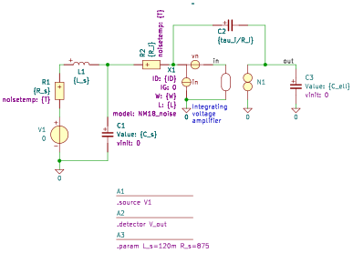

"A1_controller_noiseWLI_n"
.source V1
.detector V_out
.param L_s=120m R_s=875
C1 1 0 C value={C_s} vinit=0
C2 4 out C value={tau_i/R_i} vinit=0
C3 out 0 C value={C_ell} vinit=0
L1 2 1 L value={L_s} iinit=0
N1 out 0 in 0 N
R1 2 3 R value={R_s} noisetemp={T} noiseflow=0 dcvar=0 dcvarlot=0
R2 1 4 R value={R_i} noisetemp={T} noiseflow=0 dcvar=0 dcvarlot=0
V1 3 0 V value=0 noise=0 dc=0 dcvar=0
X1 4 0 in NM18_noise ID={ID} IG=0 W={W} L={L}
.end
Go to index
SLiCAP: Symbolic Linear Circuit Analysis Program, Version 4.0.10 © 2009-2025 SLiCAP development team
For documentation, examples, support, updates and courses please visit: analog-electronics.tudelft.nl
Last project update: 2026-02-23 02:15:58